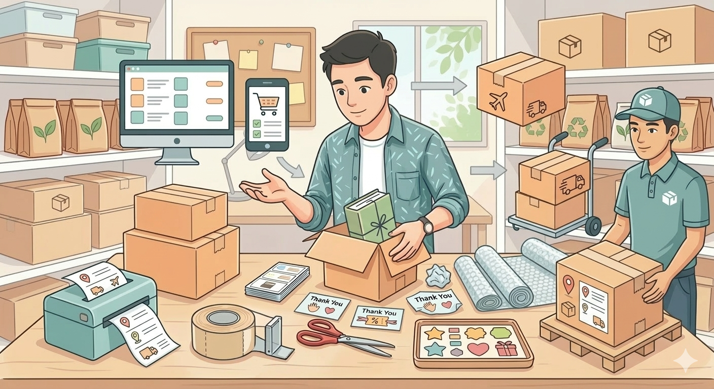

Nhập tuyến gửi và nhận
Chọn tỉnh/thành, quận/huyện gửi và nhận. Với quốc tế, chọn thêm quốc gia đến và khu vực nhận hàng.
Tài liệu này chỉ dành cho người dùng đặt giao hàng. Nội dung đã được cập nhật theo luồng nghiệp vụ hiện tại: tra cước trước, chọn gói phù hợp, khai báo hàng hóa chi tiết, tạo đơn và theo dõi hành trình.
Bạn có thể bắt đầu từ trang chủ để xem dịch vụ, sau đó chuyển sang trang Tra cứu giá để xem bảng giá minh bạch và tự tính cước trước khi tạo đơn. Nếu chưa có tài khoản, hệ thống sẽ yêu cầu đăng ký hoặc đăng nhập trước khi xác nhận đơn hàng.
Chọn Đăng ký nếu bạn là khách mới. Sau khi có tài khoản, bạn có thể tạo đơn, xem lịch sử đặt hàng và quản lý thông tin liên hệ thuận tiện hơn.

Hệ thống hiện hỗ trợ luồng đặt đơn nội địa và quốc tế. Trước khi tạo đơn, bạn nên xác định rõ điểm gửi, điểm nhận, loại hàng, số kiện và khung thời gian mong muốn để nhận báo giá chính xác.
Ở trang Tra cứu giá, bạn có thể xem bảng giá minh bạch và dùng mục Tự tính cước phí vận chuyển để so sánh các gói dịch vụ trước khi đặt hàng. Đây là bước nên làm trước để tránh nhập đơn thiếu thông tin rồi phải sửa lại nhiều lần.
Chọn tỉnh/thành, quận/huyện gửi và nhận. Với quốc tế, chọn thêm quốc gia đến và khu vực nhận hàng.
Chọn Loại hàng, Tên hàng, khối lượng, số kiện và kích thước. Hệ thống dùng dữ liệu này để tính khối lượng tính cước và đề xuất phương tiện phù hợp.
Kết quả sẽ hiển thị giá tham khảo, ETA, phương tiện đề xuất và phần giải thích công thức tính cước nếu có.

Sau khi đã tra cước, bạn chuyển sang bước tạo đơn. Hệ thống hiện ưu tiên việc chọn gói phù hợp trước khi xác nhận, thay vì chỉ nhập form rồi gửi đi như trước.
Điền đầy đủ địa chỉ lấy hàng, địa chỉ giao hàng, tên người nhận và số điện thoại nhận hàng. Thông tin càng rõ thì ETA và khả năng giao thành công càng tốt.

Hãy nhập đúng loại hàng, số kiện, khối lượng, kích thước, COD và khai giá bảo hiểm nếu cần. Với hàng quốc tế, bạn cần nhập thêm thông tin giấy tờ và mục đích gửi.
Khi dữ liệu đủ, hệ thống sẽ hiển thị danh sách gói cước phù hợp. Bạn nên so sánh tổng phí, thời gian giao và phương tiện đề xuất trước khi bấm xác nhận.

Trước khi gửi, hãy kiểm tra kỹ địa chỉ, số điện thoại, loại hàng, COD và khai giá. Sau khi xác nhận, mã đơn sẽ được tạo để bạn tiếp tục theo dõi hành trình.
Sau khi tạo đơn thành công, bạn có thể chuyển sang trang Tra đơn hàng để tra cứu hành trình, nắm trạng thái giao nhận và xử lý nhanh khi có phát sinh.
Nhập mã đơn để xem trạng thái hiện tại, các mốc thời gian và hành trình xử lý của đơn hàng.
Nếu đơn có COD, bạn nên theo dõi kỹ tổng thu hộ và ghi chú thanh toán để tránh sai lệch khi đối chiếu về sau.

Có. Bạn có thể xem nội dung và tra cước trước, nhưng khi xác nhận tạo đơn hệ thống sẽ yêu cầu đăng nhập hoặc đăng ký tài khoản.
Giá tham khảo phụ thuộc vào tuyến gửi nhận, loại hàng, khối lượng tính cước, số kiện, COD, khai giá bảo hiểm và một số phụ phí xử lý đặc thù.
Có. Khi chọn luồng quốc tế, bạn cần nhập thêm quốc gia đến, khu vực nhận, thông tin giấy tờ người nhận và mục đích gửi hàng.
Có thể hủy khi đơn vẫn còn ở trạng thái chờ xử lý. Nếu đơn đã được lấy hàng hoặc đang giao, bạn nên liên hệ hỗ trợ để được kiểm tra tình trạng thực tế.
Hãy đóng gói kỹ, chọn đúng loại hàng, khai báo bảo hiểm nếu cần và nhập đầy đủ kích thước để hệ thống đề xuất đúng phương tiện vận chuyển.